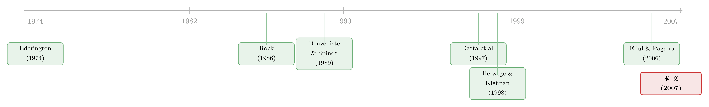

新债上市第一笔成交，凭什么白赚 47 个基点？
本文读的是 Cai, Helwege & Warga (2007, Review of Financial Studies)：用 1995–1999 年 2975 只美国公司债（含 439 只债券 IPO、2536 只增发）和保险公司的真实成交数据，作者发现新债上市后第一笔成交平均能「白赚」一笔——投机级债券 IPO 高达 47 个基点，而投资级几乎不折价。更重要的是，这笔折价是信息问题的解，而不是流动性问题的解：越是陌生、风险越高的发行人折价越大，符合簿记建档与信息不对称理论，却找不到任何支持 Rock 模型或「流动性补偿」的证据。
1 一个被股票市场垄断的老问题
「新股折价」(underpricing) 大概是金融学里被研究得最透、却始终没有定论的现象之一。一只股票公开发行 (IPO)，承销商定一个发行价，第二天开盘往往直接跳涨一截——这中间的钱，等于是发行人主动让给了申购者。围绕「为什么会这样」，股票市场上长出了一整片理论森林：有人说这是给信息劣势者的「赢家诅咒」补偿，有人说这是发行人向市场释放「我是好公司」的信号，有人说这是承销商在簿记建档里向机构「买信息」付的辛苦费，更晚近的还有人说，这干脆就是为日后股票不好卖（流动性差）预付的一笔保险金。
可是，这些故事几乎全都是讲给股票听的。
于是一个很自然的问题冒出来了：换成债券，还成立吗？直觉上，债券比股票「安全」得多——它有票面、有票息、有评级，现金流的上界是封死的。如果折价真的是为信息不对称买单，那么对一只「几乎没有信息问题」的高评级债券来说，折价就该消失；反过来，如果它只是流动性的影子，那么折价就该跟着债券好不好卖一起走。债券市场恰好提供了一块比股票更干净的「试验田」：在这里，信息和流动性这两条线索，第一次有机会被分开来看。
这正是 Cai、Helwege 和 Warga 三位作者想做的事。他们要问的，不是「债券有没有折价」（这个问题旧文献吵了三十年），而是更锋利的一刀：如果有折价，它到底是信息的解，还是流动性的解？
2 把两类「新债」分开：IPO 与 SBO
要回答这个问题，第一步是把「新债」这个笼统的概念拆开。
作者的核心区分是：债券 IPO（bond IPO，指一家公司第一次在公开债券市场发债）与增发（seasoned bond offering, SBO，指已经在公开债券市场有存量债的公司再发新债）。这个区分至关重要——因为所有的信息理论都预测，IPO 的折价应该更大：第一次发债的公司，是投资者第一次有机会去分析它的处境，信息问题最严重；而一家发过很多次债的老面孔，机构早就把它研究透了，再发一笔，理应不需要靠折价去「买」什么。
更狠的是作者对「私人公司债券 IPO」的界定：有一类发行人，连股票都没上市过，它的这一笔债券 IPO，是这家公司有史以来第一次向公众发行任何证券。对这种发行人，投资者手里的信息几乎是一张白纸——如果信息理论对，这里的折价应该最夸张。
接着，一个更现实的问题是：债券的成交价从哪儿来？
股票市场算折价很简单——发行价比上第一天收盘价。可债券市场是「交易商主导」(dealer market) 的，成交稀疏，没有一个数据库能覆盖全部成交。作者用的是一个相当特别的数据源：UH-NAIC 数据库，即休斯顿大学整理的、保险公司向全美保险监管协会 (NAIC) 申报的全部公司债买卖记录。这套数据的好处是「够真」——它记录的是真金白银的成交，而非报价。保险公司持有约三分之一的公司债、占高收益债成交量的四分之一，是这个市场里举足轻重的玩家。作为对照，作者指出 1999 年 UH-NAIC 里的日均成交额超过 $2 billion，而当时唯一的另一个成交数据库——纽交所自动债券系统 (ABS)——日均还不到 $10 million。差了两百倍。
这一点其实暗藏玄机。早年 Datta, Iskandar-Datta & Patel (1997) 用纽交所成交数据，算出投机级债券 IPO 折价 1.86%、投资级为负；而 Helwege & Kleiman (1998) 用交易商报价，算出投机级折价 39 bp。差异为什么这么大？因为纽交所债券成交极其零散，且被「十手以内」的散户小单主导。换数据，就换了结论——这本身就是后文「流动性 vs. 信息」之争的一条暗线。
3 先证明「折价」不是「磨合」
在谈折价之前，作者堵了一个老漏洞。
旧文献里有个长期争论：新债的到期收益率 (YTM) 通常高于存量可比债券，这究竟是折价（发行时就定低了价），还是一个磨合过程(seasoning，新债要花一段时间才「定」到合理价）？如果是后者，那么用上市后第几天的价格来算折价，结果就会差很多。
作者的处理很干脆：他们用上市后第一周内的成交逐笔去看收益。如果存在磨合，价格会随交易日推移系统性地漂移；如果不存在，那么第一周里任何一笔成交价给出的折价估计都应该差不多。结果——磨合并不存在。无论用第一周里哪一笔成交，折价估计都几乎不变。于是作者干脆把分析锚定在上市后第一笔有记录的成交上。
这一步看似技术性，实则是把「折价」这个概念从「磨合」里彻底剥离出来的关键。
4 识别策略：用市场调整后的初始收益
折价怎么量？作者沿用股票文献的思路，但做了债券特有的处理。
设某只债 IPO 的发行价为 \(P_t\)（即第 \(t\) 天的「成交」价，这里是发行价），上市后第一笔成交在 \(n\) 天后、价格为 \(P_{t+n}\)，则该债在 \(n\) 天里的原始收益为：
$$ BR_{i,n} = (P_{t+n} - P_t)/P_t $$
其中价格均为「净价 + 应计利息」之和。但债券市场在这七天里可能整体大涨大跌，所以不能用原始收益，必须扣掉同期一个可比债券指数的回报。作者用雷曼兄弟公司债指数 (Lehman Brothers Corporate Indices)，按到期期限（中期 / 长期，以 10 年为界）和信用评级双重匹配。于是市场调整后的超额收益为：
$$ MARK_{i,n} = BR_{i,n} - \sum_{j=1}^{n} INDX_{i,t-n+j} $$
这里 \(\sum INDX\) 是从第 \(t\) 天起、同评级同期限的雷曼指数在这 \(n\) 天里的累积回报。这个 \(MARK_{i,n}\) 就是这篇论文反复在用的「初始收益」——它度量的，正是发行人让给申购者的那笔折价。
理解这个定义之后，所有结果都好读了。
5 主要结果：折价真实存在，但只挑「陌生人」下手
先看最基础的事实。
如表 1 所示，债券 IPO 上市后第一笔成交的平均市场调整收益为 0.370%，t 值高达 8.754——这是极其干净的显著。增发 (SBO) 也有折价，但只有 0.027%（t = 2.529），量级是 IPO 的十四分之一。而到了第二、三、四笔成交，收益就再无系统性的正值（第二笔甚至是 -0.172，不显著）。钱，全部白赚在第一笔成交里。
但真正关键的一步，在于把这 0.37% 沿着「风险」和「陌生程度」切开。作者发现：
- 按评级切：折价集中在投机级。投机级债券 IPO 平均折价约
47 bp且显著，而投资级 IPO 的折价在统计上不显著。一只安全的高评级债，几乎不折价——这正是信息理论的预言：债越安全，关于发行人的额外信息就越不值钱，也就无需用折价去购买。 - 按「陌生」切：折价最大的，是那些私人公司——连股票都没上过市、这笔债是其有史以来第一次公开发行证券的公司；是进入公开债市时间还很短的公司；以及最近才在公开市场发过股票的公司。
- 按簿记建档切：如果一家公司最近两年刚发过债、或刚完成股票 IPO，机构其实已经评估过它了，于是它再发债需要的折价更小。初始收益与簿记建档过程显著相关。
这三刀切下去，画像高度一致：折价专挑「投资者不了解」的发行人下手。这与簿记建档理论 (Benveniste & Spindt, 1989) 和信息不对称理论一致。
6 反转：Rock 模型与流动性，双双落空
到这里，故事还只讲了一半。如果停在「信息驱动折价」，这篇文章不过是把股票市场的共识搬到债券上。真正的反转，在于作者逐一排除了另外两个本来很有竞争力的解释。
其一，Rock 模型落空。 Rock (1986) 的「赢家诅咒」依赖市场上同时存在知情与不知情投资者：知情者只申购定价合理或偏低的新券，把高价、亏本的留给不知情者，折价是给后者的补偿。作者的检验巧妙：散户比机构更可能不知情，而散户更可能在纽交所交易债券；如果 Rock 模型对，那么发行时在纽交所挂牌的债券应折价更大。结果——没有这种关系。Rock 模型在债券市场找不到立足点。
其二，流动性解释落空。 这是全文最锋利的一刀，因为它直接回应了 Ellul & Pagano (2006) 在股票市场上的发现——他们认为折价是对「上市后股票会变得不流动」的风险补偿。作者用 UH-NAIC 数据构造了三个流动性度量：发行规模、成交频率（保险公司间）、买卖价差 (bid-ask spread)。三者大体一致（更大的发行价差更窄、成交更频繁；发行规模与成交频率的相关系数高达 0.57）。但当他们把这些流动性变量放进折价回归——没有任何证据表明流动性差会导致折价。也就是说，越不好卖的债，折价并不更高。Booth & Chua (1996) 那条「折价→吸引交易→事后更流动」的因果，在这里也没有得到支持。
这个「双双落空」非常重要。它说明：折价在债券市场是信息现象，不是流动性现象。把股票文献里时髦的流动性故事直接套到债券上，会套错。
至于信号理论 (signaling)，作者用「未来评级下调」作为事后信息不对称的度量来检验——结论也偏向否定（与股票文献中信号模型屡屡被证伪一致，见 Spiess & Pettway, 1997）。所以最终站住脚的，是簿记建档 + 信息不对称这一支。
7 文献脉络
把这条线索拉直来看，会发现它走了一条很有意思的「先实证、后理论、再回到实证」的路。
最早的一批债券研究——Ederington (1974)、Lindvall (1977)、Weinstein (1978)、Sorenson (1982)——其实并不知道「折价」这个词该怎么用，他们纠结的是一个朴素问题：新债的收益率为什么高于存量债？如果收益率很快收敛，就叫折价；如果收敛得慢，就叫「磨合」。Sorenson (1982) 倾向于认为磨合其实主要是折价，而 Fung & Rudd (1986) 反过来说，只要用更干净的价格数据，磨合和折价就一起消失了。Wasserfallen & Wydler (1988) 则在瑞士债市里找到了折价的证据。这批老研究不区分 IPO 与增发，这是它们的共同盲区。
与此同时，股票这一侧的理论森林在 1980 年代疯长：Rock (1986) 的赢家诅咒、Benveniste & Spindt (1989) 的簿记建档、以及 Allen & Faulhaber (1989)、Grinblatt & Hwang (1989)、Welch (1989) 的一系列信号模型。到 2006 年，Ellul & Pagano 又给这片森林添上「流动性补偿」这条新枝。

债券这一侧真正开始「分清 IPO 和增发」，是从 Datta, Iskandar-Datta & Patel (1997) 和 Helwege & Kleiman (1998) 开始的，但他们受制于数据（纽交所成交 / 交易商报价），样本和口径都有局限。本文 (Cai, Helwege & Warga, 2007) 站的位置，正是把更具代表性的保险公司成交数据、IPO/SBO 的清晰区分、以及信息 vs. 流动性的正面对决三者第一次合在一起——它既是对老债券文献的收口，也是对股票折价理论的一次「跨市场压力测试」。Hale & Santos (2007) 几乎同时从发债成本角度也确认了折价的存在。
关于债券 IPO 里承销商那一侧的微观行为，本博客另有两篇可参照——发行人「卖贵了」反而排长队的反常现象，见《在中国发债，为什么「卖贵了」反而排着长队？》；承销商如何借超额配售在二级市场做空，见《把债券「超额配售」给你：承销商在悄悄做空什么？》。而把「自由进入 + 折价 + 证券设计」放在一个均衡里看的理论视角，可参见《自由进入的市场里，为什么钱还能「白赚」？》。
8 评论与延伸（Q&A + 研究方向）
(a) 几个可能的疑问
Q：保险公司的成交数据，能代表整个公司债市场吗？会不会有样本偏差？
作者正面回应了这点。保险公司持有约三分之一的公司债、占高收益债成交量约四分之一，是绝对的主力；UH-NAIC 的日均成交额（1999 年逾
$2 billion）也远超唯一的替代品纽交所 ABS（不足$10 million）。更关键的是，保险公司参与了96%的 IPO 和81%的 SBO 申购，覆盖面相当广。当然，保险公司是机构、是「相对知情」的一方，这恰恰让 Rock 模型（依赖不知情散户）更难被它们的数据支持——这个方向上的偏差，反而强化了「Rock 模型落空」的结论。
Q：投资级 IPO「不显著折价」，是真没折价，还是样本太小没检验出来？
两者都有可能，作者更倾向前者。投资级 IPO 在样本里数量本就少（IPO 样本里 A 级及以上仅
34只、BBB 仅62只，而 B 级多达263只），但「安全债无需为信息付费」本身就是信息理论的内生预言，所以「投资级不折价、投机级折价 47 bp」这个对比方向，与理论是自洽的，而非单纯的功效不足。
Q：债券折价 0.37%，比股票 IPO 动辄两位数的折价小得多，是不是说明这事在债券市场无足轻重？
量级小是对的，但别忘了债券的现金流上界是封死的——它本就不该有股票那么大的折价空间。真正有意义的是横截面差异：投机级 47 bp vs. 投资级近乎为零，私人公司远高于老面孔。一个被信息结构整齐切割的 0.37%，比一个笼统的大数字信息量更大。
Q：怎么排除「折价其实是磨合（seasoning）」这个老对手？
作者用第一周内逐笔成交去检验：若存在磨合，收益应随交易日系统性漂移；结果用第一周任意一笔成交算出的折价都几乎不变，且第二、三、四笔成交不再有显著正收益。磨合在数据里是缺席的，折价就「钉」在第一笔成交上。
Q：既然簿记建档能降低折价，为什么不所有公司都先发个小债「热身」？
因为发债不是免费的，而且簿记建档的收益主要来自「机构最近评估过你」这个时效性很强的状态——作者用的正是「最近两年内发过债 / 发过股」的指示变量。一家几十年的老发行人和一家发了十年的公司，声誉差异已经很小（所以作者还加了发债年数的平方项来捕捉这种凹性）。换句话说，热身的价值会衰减，不是一劳永逸的。
Q：这篇文章对「流动性溢价」研究意味着什么？
它是一个有用的反例：在公司债一级市场折价这个特定问题上，流动性解释不成立。这并不否认二级市场存在流动性溢价（那是另一个问题），但它提醒我们，把股票市场的流动性故事不加检验地平移到债券一级市场，会错。关于公司债二级市场流动性的细致度量，可另见《把「成交价」从「成交量」里解放出来——重新丈量公司债的流动性》。
(b) 几个可能的研究问题与提案
1. 用 TRACE 重做这篇论文（外加流动性的「危机检验」）
【经济故事】本文样本止于 1999 年、且只看保险公司。2002 年 TRACE 上线后，公司债成交变成近乎全市场可观测，且跨越了 2008、2020 两次流动性危机。一个自然的问题是：在流动性极度紧张的时期，「流动性不驱动折价」这个结论还成立吗？危机里信息和流动性可能纠缠得更紧。【可行性】高。TRACE + Mergent FISD 是标配，IPO/SBO 区分可复刻；难点是危机窗口里发行量骤减、样本变薄，需要小心识别。
2. 外资持有人与债券 IPO 折价
【经济故事】本文把折价归于「投资者对发行人的陌生程度」。那么，一个天然更「陌生」的投资者群体——外资——的参与度，是否会系统性地放大折价？如果某只新债的潜在买家里外资占比更高，信息不对称更严重，折价是否更大？这把本文的「信息」机制接到了跨境信息摩擦上。【可行性】中。需要发行层面的投资者构成数据（如 eMAXX、或央行持有人调查），与发行人「是否私人公司 / 发债年数」交互识别；外资占比的内生性是主要担忧，可能需要指数纳入等外生冲击做工具。
3. 评级机构数目 / 评级分歧与折价
【经济故事】本文用未来评级下调度量事后信息不对称。更直接的检验是：发行时评级机构之间的分歧（S&P、Moody's、Fitch 给出不同评级）是否预测更大的折价？分歧正是「信息问题严重」的实时信号，且不依赖事后实现。【可行性】高。FISD 本就记录三家评级，构造分歧度量直接可行；难点是评级分歧与评级水平高度相关，需在同一评级档内做横截面比较。
4. 簿记建档「时效性」的衰减曲线
【经济故事】本文用「两年内发过债/股」的二元指示变量。但「机构最近评估过你」的价值大概率是连续衰减的——上次发债是 3 个月前还是 23 个月前，效果应该不同。把指示变量换成「距上次发行的月数」，能描出一条折价随时效衰减的曲线，直接刻画信息的「保质期」。【可行性】高。完全在 FISD 内可做，只是重新参数化加非线性项；识别上要警惕「频繁发债者本身质量更好」的混淆。
5. 私人公司「首次公开证券」的长期表现
【经济故事】信号理论预测，折价最大的债券事后应是「更好」的债券。本文样本期短、难做长期跟踪。一个延伸是：那些折价最高的私人公司债券 IPO，事后违约率、评级迁移是否反而更好（信号成立）还是更差（赢家诅咒成立）？这能在信号 vs. 信息补偿之间做一次更长窗口的裁决。【可行性】中。需把发行样本与长期违约/评级数据（Moody's DRD）拼接，私人公司的事后信息可得性差是主要障碍。
9 我的判断
这篇文章的贡献，不在于「发现了债券折价」——这件事旧文献早有线索。它的真正价值在于把一个被股票市场垄断的理论争论，搬到一块更干净的试验田上做了一次裁决：用保险公司的真实成交、清晰的 IPO/SBO 区分，把「信息」和「流动性」两条线索分开，并给出一个方向高度一致的横截面证据——折价专挑陌生、风险高、未经簿记建档检验的发行人，而与债券好不好卖无关。47 bp 这个数字本身不大，但它被信息结构切得如此整齐，说服力远胜一个笼统的大数。
对识别，我有两点保留。其一，保险公司是「相对知情」的机构投资者，用它们的成交去检验依赖「不知情散户」的 Rock 模型，本身就给 Rock 模型上了难度——「Rock 落空」一部分可能是数据视角造成的，而非模型在债市真的无效。其二，流动性度量都是事后、且互相高度相关（发行规模与成交频率相关系数 0.57），买卖价差又只有 533 只可得；用这样的代理变量去「证否」流动性解释，力度上要打个折扣——「没找到关系」与「关系不存在」之间，仍有距离。
后续我最想看到的，是把这套检验放进 TRACE 时代的两次流动性危机里重做一遍。本文在一个相对平稳的 1995–1999 年间得出「流动性不驱动折价」；但折价究竟是不是流动性的影子，最该在流动性枯竭的时刻去验。如果在 2008 或 2020 的发行窗口里，流动性变量突然开始显著预测折价，那么本文的结论就需要加上一个重要的状态依赖限定词——而那，恰恰会是这条研究脉络下一个真正有意思的转折。
参考文献
Benveniste, L. M., and P. Spindt (1989). How Investment Banks Determine the Offer Price and Allocation of New Issues. Journal of Financial Economics 24, 341–361.
Booth, J. R., and L. Chua (1996). Ownership Dispersion, Costly Information and IPO Underpricing. Journal of Financial Economics 41, 291–310.
Cai, N., J. Helwege, and A. Warga (2007). Underpricing in the Corporate Bond Market. Review of Financial Studies 20(6), 2021–2046.
Datta, S., M. Iskandar-Datta, and A. Patel (1997). The Pricing of Initial Public Offers of Corporate Straight Debt. Journal of Finance 52, 379–396.
Ederington, L. H. (1974). The Yield Spread on New Issues of Corporate Bonds. Journal of Finance 29, 1531–1543.
Ellul, A., and M. Pagano (2006). IPO Underpricing and After-Market Liquidity. Review of Financial Studies 19, 381–421.
Fung, W. K. H., and A. Rudd (1986). Pricing New Corporate Bond Issues: An Analysis of Issue Cost and Seasoning Effects. Journal of Finance 41, 633–643.
Helwege, J., and P. Kleiman (1998). The Pricing of High-Yield Debt IPOs. Journal of Fixed Income 8, 61–68.
Rock, K. (1986). Why New Issues are Underpriced. Journal of Financial Economics 15, 187–212.
Sorenson, E. H. (1982). On the Seasoning Process of New Bonds: Some are More Seasoned than Others. Journal of Financial and Quantitative Analysis 17, 195–208.
Weinstein, M. I. (1978). The Seasoning Process of New Corporate Bond Issues. Journal of Finance 33, 1343–1354.